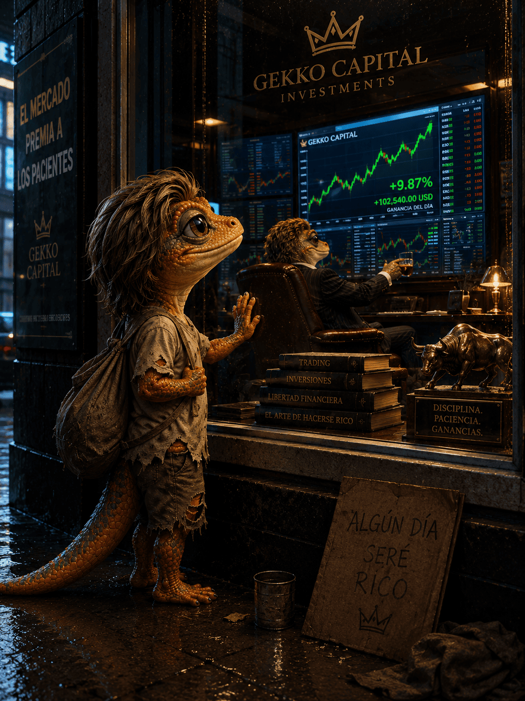

Always on
The engine lives in a headless Node server, not in a browser tab. Close the laptop lid on the client and the bots keep ticking every 30 seconds.
Personal experiment · not publicly available
Buy low. Sell high. Laugh always.
A single-user trading-bot platform. A headless engine ticks 24/7 against a live broker account, running grid, DCA and market-maker strategies on USD-denominated instruments — while a thin web client just watches.
01 — What it is
EGG is not a product, a signal service or a fund. It is a personal engineering project: an always-on process that places, tracks and reconciles real limit orders according to rules I wrote, and then shows me — honestly — what those rules actually earned.
The engine lives in a headless Node server, not in a browser tab. Close the laptop lid on the client and the bots keep ticking every 30 seconds.
Every bot, order, fill, trade and event is persisted in a local SQLite file in a single atomic transaction. The database is the backup.
Every 10 minutes EGG compares its own state against the broker and flags the result Synced, Warning or Diverged. Drift gets caught, not lost.
A failing tick is treated as transient and retried. A bot flagged error is not dead — it backs off and retries, so an outage heals without a human.
A grid optimizer walks historical intraday tape, sweeps candidate step sizes, and ranks tickers by net dollars per day at equal capital — costs and fees included.
Commissions are baked into average cost and into every realized-profit number. A "winning" round trip that lost money after fees is shown as what it is: a loss.
02 — Strategies
Each strategy is a pure decision function: hand it a config, a state and a market context, and it returns the next state plus a list of order intents. It never talks to a broker, never touches a clock, never throws a network error. That is what makes it testable.
Slice a price range into rungs. Buy each rung on the way down, sell it one step up.
empty → buying → selling → empty.Buy a fixed dollar amount on a fixed schedule. No cleverness. That is the point.
Quote both sides of the spread and get paid for standing still.
There was a fourth, bondiola — flip a held position inside a fixed price band.
It went unused, so it was deleted: type, form, wizard card, command and route. Dead
strategies are worse than no strategy.
03 — How it works
React + charts
reads over HTTP · live quotes over SSE
no engine here
Trading engine + scheduler
Bot service · price feed · reconciliation
SQLite (WAL) — source of truth
calls the broker API directly
BrokerProvider
port. It does not know or care which broker is on the other end.
Exactly one engine may tick, and the server is that engine. Two engines on one live account means double-placed real orders — so there is only ever one.
grid-buy-3, dca-buy, mm-bid — never by broker id. Runtime state stays plain JSON, which is why it survives a restart.
SQLite holds the truth; broker data is used to check it. Disagreement raises a reconciliation flag instead of silently overwriting history.
Resetting a bot archives the cycle and starts the strategy over. Trades, events and snapshots are kept — the record outlives the experiment that produced it.
04 — Under the hood
EGG started as a browser-only app with the engine in a tab. Moving it server-side was ops, not a rewrite: the pure domain ran unchanged in Node, and only the persistence adapter and the UI's data layer had to change. That is the whole argument for the architecture, and it got tested for real.
domain/Pure TypeScript. Engine, strategies, state machine, analytics, reconciliation, research math — and the ports. Forbidden by lint rule from importing React, HTTP or any database.
application/Composition root and engine wiring. Bot service, price feed, MEP and account-value services, API metering.
infrastructure/The adapters: SQLite persistence and the broker client. Swapping brokers touches two files, because everything upstream depends only on the port.
server/Node entrypoint. Boots the services against SQLite, mounts the REST + SSE API, serves the client, shuts down gracefully.
ui/React, a query cache and charts. A pure HTTP client — it renders what the server says and has no opinions of its own.
A spare laptop that never sleeps, reachable only over a private mesh network. Access control is network membership — the server is not exposed to the public internet, and it is not going to be. Credentials live in one environment file and never touch the database or a backup.
05 — The Fat Gecko
Every serious system deserves one unserious feature. He reacts to fills, errors and resets, and dispenses questionable financial wisdom every few minutes. He can be muted in Settings, but he will remember.

Yes, the gecko is aspirational. No, the returns are not.
06 — Availability
There is no sign-up, no waitlist, no download, no invite, and no paid tier. EGG runs on one machine, against one brokerage account, for one person. It was built to answer a question I had about market microstructure and my own discipline — not to be sold.
Automated trading can lose money quickly, including more than you planned to risk. Anything described on this page is a description of a personal project, nothing more. If that changes, this page will say so.